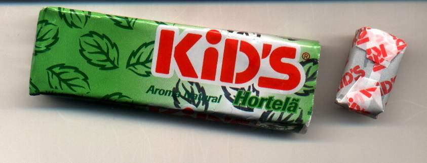

b3 quiet
( !LSS! Hacking Group! )
H4il! right now, it seems you
just lose the control of your machine, huh? But, dont worry.. we
take it for you and we'll keep for us just for a little bit time.
Dont cry! and Viacom.. Just like i said in the footpage.. Blame yourself
or God.
Nos da LSS viemos protestar
contra as fotos de kids q estao por ai, espalhadas pela rede. Nao eh
possivel que o brasil, com uma infra-estrutura politica, social e
economica deficiente, embarque nessa de pais de primeiro mundo quando o
assunto eh pornografia. Deixe q os EUA explorem todo potencial desse novo
mercado: nos devemos primeiro explorar nosso proprio potencial e crescer
como um pais digno. Para ilustrar nossa situacao comprometedora, atentem
para a foto abaixo, onde, uma vez mais, esta explicito fotos e
imagens de kids pela net afora.. eh ou nao eh uma vergonha? by LSS.

[ irwx ] - [ ^LookICE^ ]
- [ str0 ] - [ r4ideN ]
!LSS!